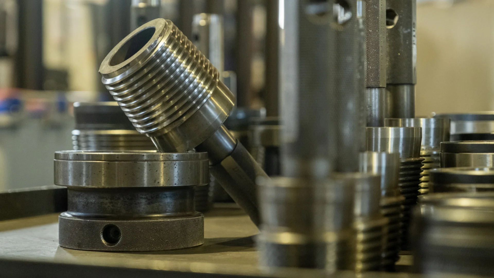

Dal campione o dal disegno
Partendo dalle vostre richieste, che sia un campione o un disegno, realizziamo pezzi speciali adatti alle esigenze più svariate.

Una misura particolare, una connessione specifica o la necessità di modificare un componente possono richiedere una soluzione dedicata. Affianchiamo i professionisti della perforazione nella valutazione di richieste fuori catalogo.
In F.G.S. Drill sappiamo che il lavoro di perforazione non è sempre standard. Spesso le condizioni del terreno, le geometrie delle macchine o le specifiche di un progetto richiedono qualcosa che non si trova in un normale catalogo: grazie alle nostre lavorazioni su misura, i nostri clienti possono disporre di attrezzature speciali e personalizzate.
Partendo dalle vostre richieste, che sia un campione o un disegno, realizziamo pezzi speciali adatti alle esigenze più svariate.
Nel nostro stabilimento lavoriamo utilizzando acciai di alta qualità e trattamenti termici mirati.
L’esperienza dei nostri operatori e la programmazione CNC di ultima generazione ci consentono di realizzare un prodotto su misura di altissima qualità.
Indica il tipo di componente, le dimensioni, le connessioni e l’eventuale quantità richiesta. Se disponibili, allega disegni o riferimenti tecnici.